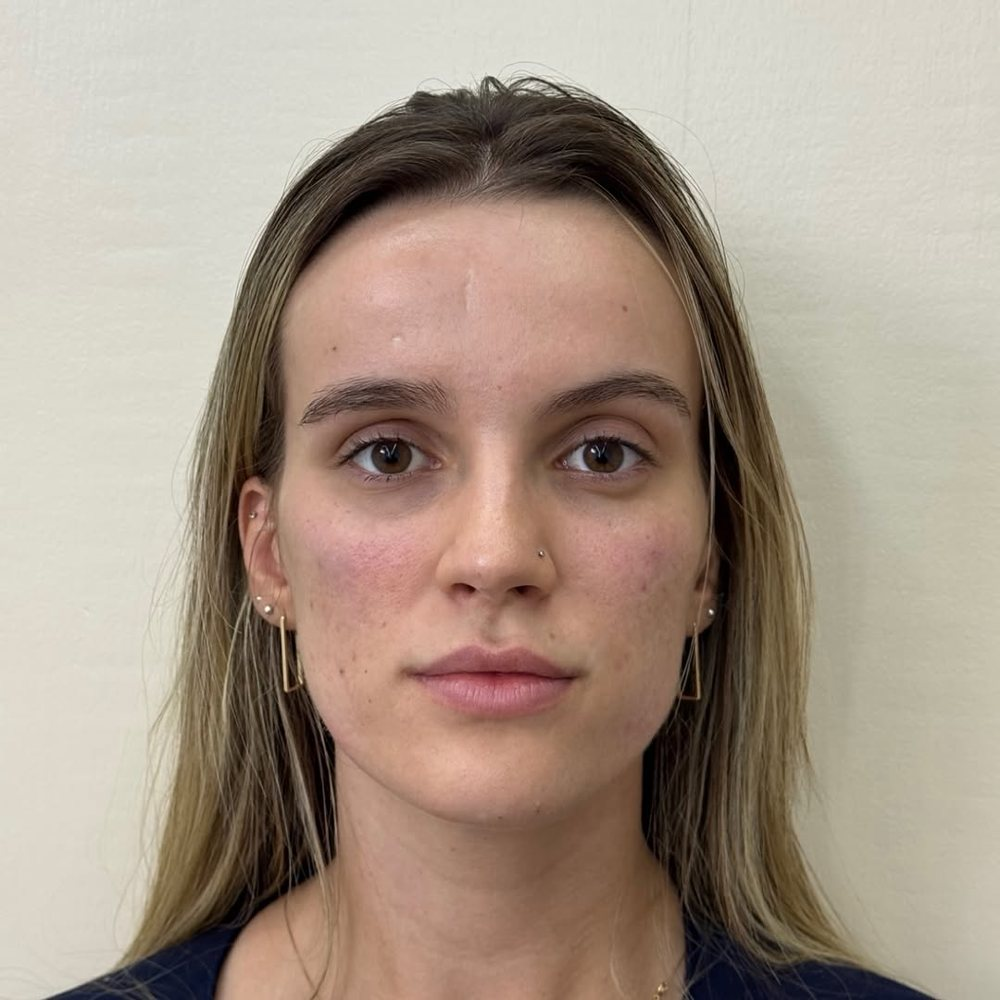
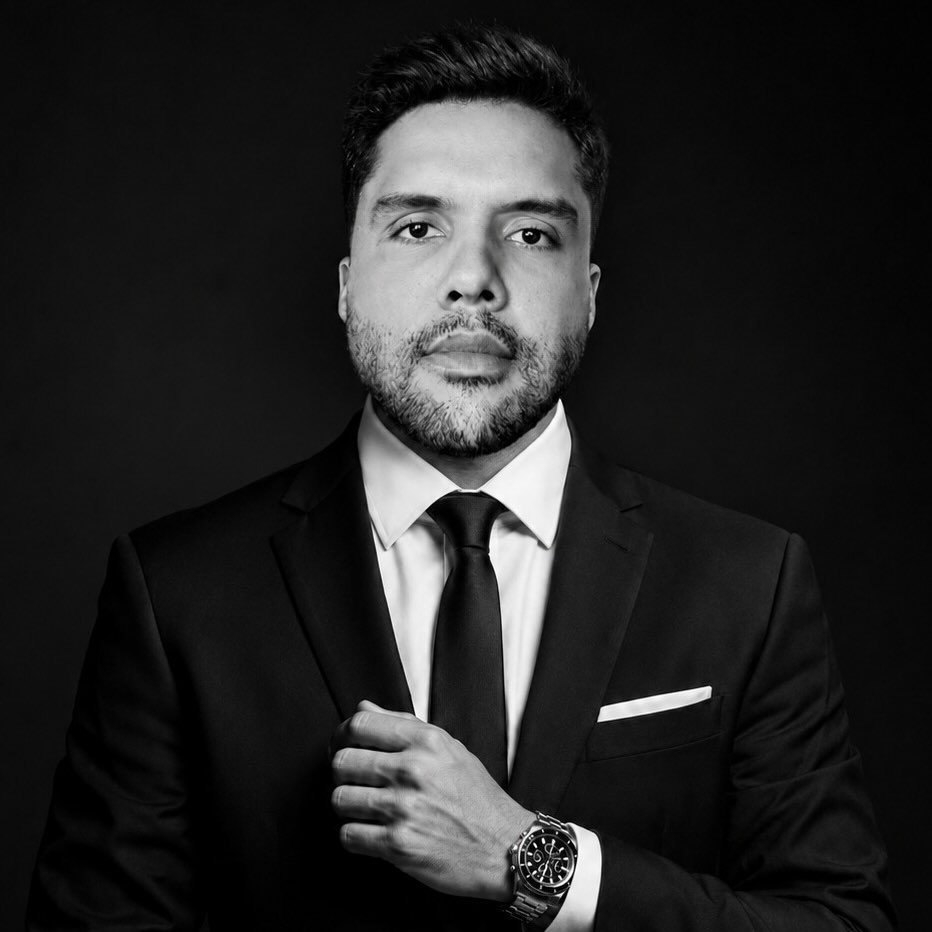
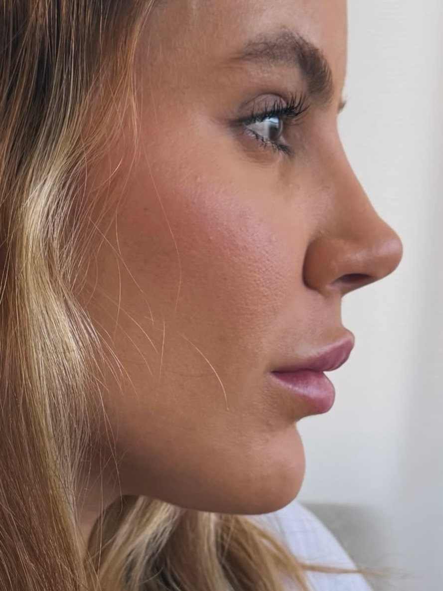
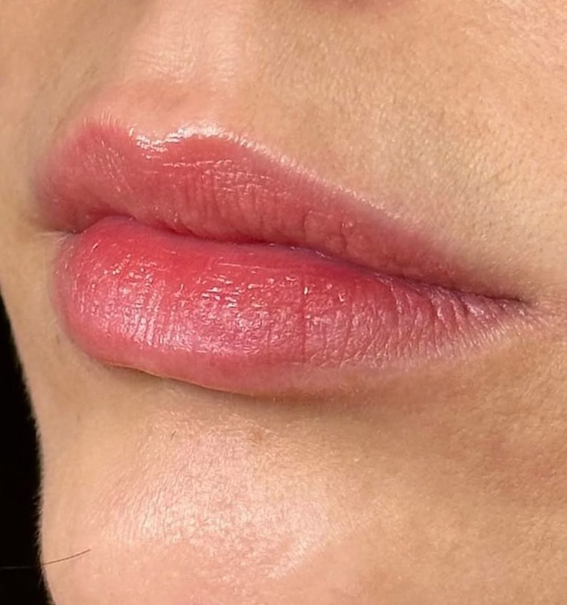
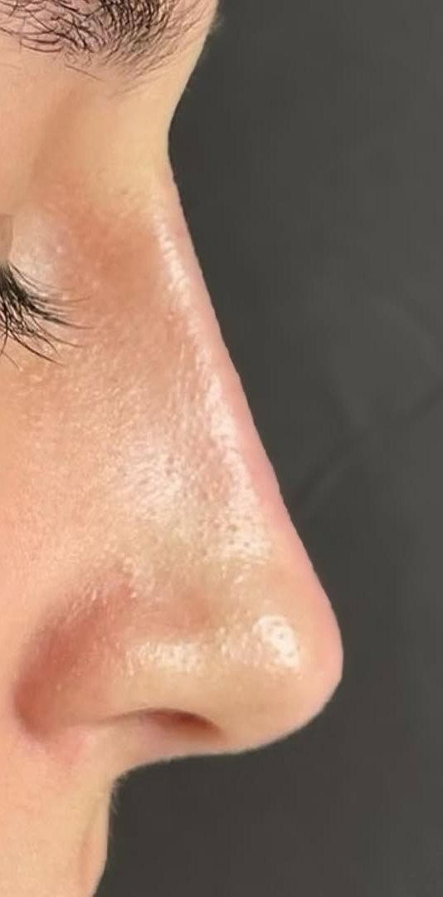
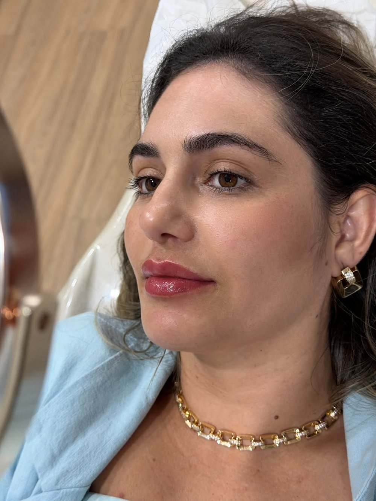
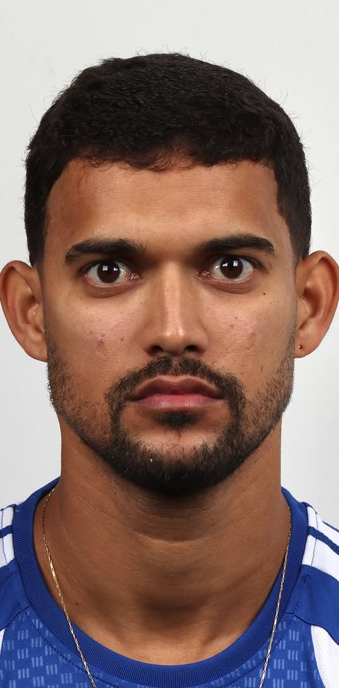
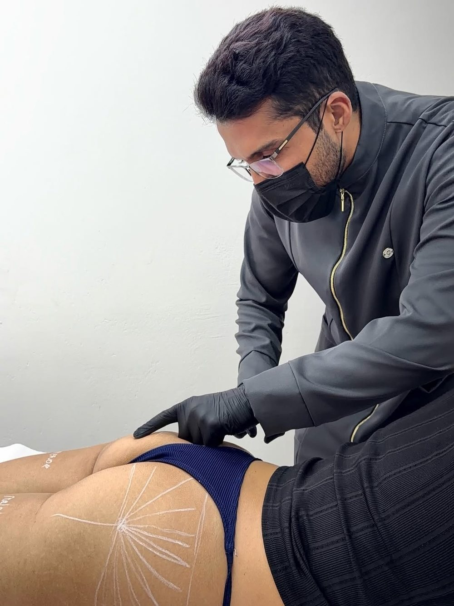
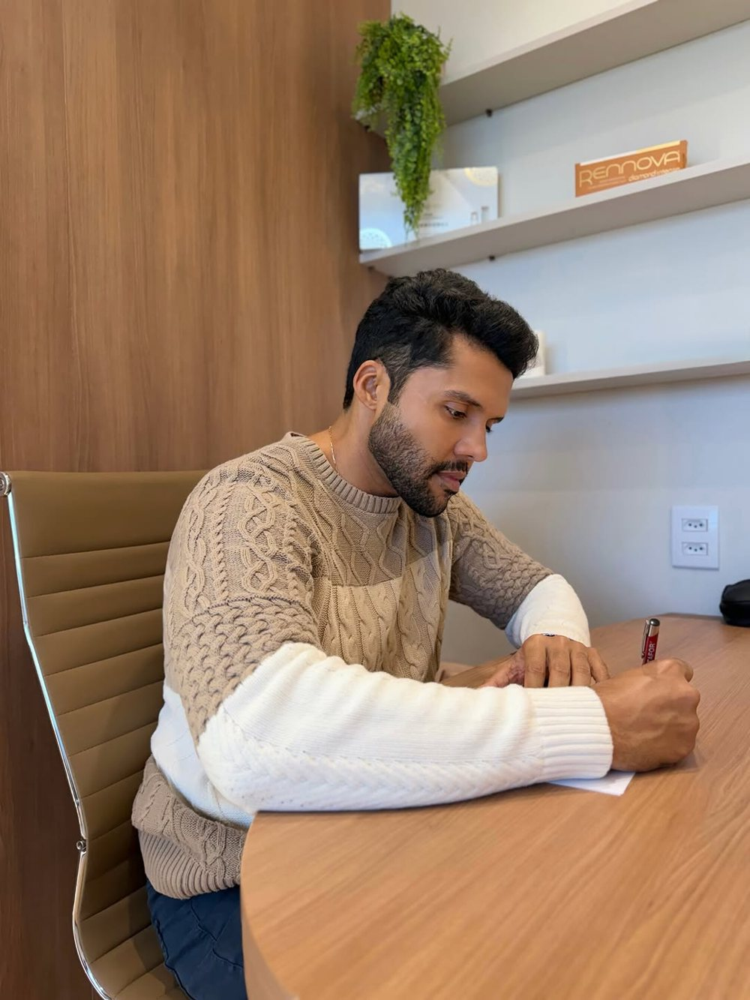
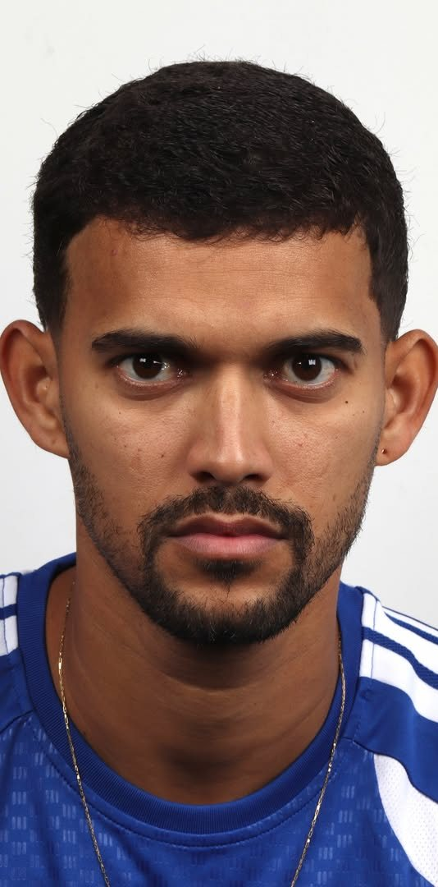

Toxina botulínica
Suaviza as linhas de expressão e mantém o rosto em movimento.
- Linhas da testa
- Ruga entre as sobrancelhas
- Pés de galinha

Dr. Henrique Amaral · Odontologia e estética · Belo Horizonte
Odontologia estética e harmonização facial e corporal com o Dr. Henrique Amaral, em Belo Horizonte. Do sorriso ao contorno do rosto, cada detalhe tem um propósito, e a sua expressão continua sendo a sua.

O maior desafio da harmonização está nos olhos de quem aplica. Um pintor não coloca tinta ao acaso. Aqui, cada ponto tratado tem um motivo, e o que não tem motivo fica de fora.
O Dr. Henrique olha primeiro para as proporções do seu rosto, para a sua expressão e para o que já é bonito em você. O plano vem depois. Quando a indicação é boa, ninguém pergunta o que você fez. Só comentam que você está bem.
Beleza é identidade. O seu rosto é a referência, e nenhum outro.
Produto só entra onde existe uma razão clara. Às vezes a melhor indicação é fazer menos.
Menos exagero, mais presença. O resultado acompanha a sua expressão em vez de competir com ela.
Você não precisa chegar sabendo o que fazer. Escolha o que chama a sua atenção e converse com a equipe. O plano é definido olhando o seu rosto, e não uma tabela.

Suaviza as linhas de expressão e mantém o rosto em movimento.

Contorno, hidratação e volume na medida da sua boca.

Ajustes no contorno do nariz com preenchimento, sem cirurgia.

Um plano para o rosto inteiro, que valoriza proporções e preserva a expressão.

Destaca os traços que o rosto do homem já tem, com equilíbrio e proporção.

Realça o que você já tem. Cada glúteo tem a sua anatomia, e o plano parte dela.

Lentes em porcelana e em resina, desenhadas para o seu rosto. O sorriso entra no mesmo plano da harmonização.
Fotos reais de pacientes do Dr. Henrique. Mesma pessoa, mesmo ângulo. Arraste o divisor para comparar.
Mandíbula, queixo e região dos olhos. O rosto fica mais forte e equilibrado, e continua sendo o dele.
Resultados variam de pessoa para pessoa. As imagens mostram casos individuais e não representam garantia de resultado. Toda indicação depende de avaliação presencial.
Quero uma avaliação do meu caso
Você não sai com uma seringa marcada. Sai sabendo o que faz sentido para o seu rosto e o que não faz.
Agendar minha avaliaçãoVocê chama, conta o que incomoda e a equipe encontra um horário.
O Dr. Henrique analisa proporções, expressão e histórico. Você fala o que quer e, principalmente, o que não quer.
Você recebe a indicação, a ordem dos procedimentos e os valores. Se algo não for indicado para você, ele diz.
Feito em consultório. Você sai com as orientações de cuidado e o contato da equipe.
Harmonização bem indicada passa despercebida. Os colegas de trabalho notam que você parece descansado. A família acha que foram as férias. Ninguém imagina um procedimento, porque o rosto que eles veem é o seu, com as proporções no lugar. Esse é o padrão que o Dr. Henrique persegue em cada paciente.
O Dr. Henrique Amaral é cirurgião-dentista e se dedica à odontologia estética e à harmonização facial e corporal em Belo Horizonte. Sorriso e rosto são planejados juntos, porque um muda a leitura do outro. Já atendeu mais de 2.000 pacientes. Atende mulheres e homens com o mesmo critério. No rosto feminino, trabalha lábios, perfil, contorno e a suavidade da expressão. No masculino, mandíbula, queixo e região dos olhos. Nos dois casos, sem mudar o rosto de ninguém.
Atende na Harmonizar · Odontologia & Estética, e em diversas regiões. Além do consultório, ensina a aplicação de toxina botulínica a outros profissionais em sua mentoria.
"A técnica se aprende. O olhar artístico se desenvolve com o tempo."Ver o trabalho no Instagram · @drhenriqueamaral
Conte o que incomoda você. O Dr. Henrique avalia o seu rosto e diz, com honestidade, o que vale a pena fazer e o que não vale.
Agendar avaliação no WhatsAppSem compromisso de fazer procedimento · BH e região